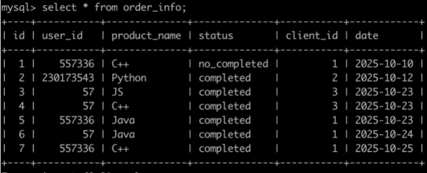
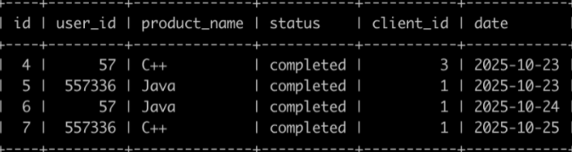

牛客每个人最近的登录日期 1.0
description
牛客每天有很多人登录，请你统计一下牛客每个用户最近登录是哪一天，用的是什么设备.
login记录表，简况如下:
| id | user_id | client_id | date |
|---|---|---|---|
| 1 | 2 | 1 | 2020-10-12 |
| 2 | 3 | 2 | 2020-10-12 |
| 3 | 2 | 2 | 2020-10-13 |
| 4 | 1 | 3 | 2020-10-13 |
| 5 | 3 | 1 | 2020-10-14 |
| 6 | 4 | 1 | 2020-10-14 |
| 7 | 4 | 1 | 2020-10-15 |
user表，简况如下：
| id | name |
|---|---|
| 1 | tm |
| 2 | fh |
| 3 | wangchao |
client表，简况如下：
| u_n | c_n | date |
|---|---|---|
| fh | ios | 2020-10-13 |
| wangchao | ios | 2020-10-13 |
牛客每个人最近的登录日期 5.0
description
统计牛客每个日期新用户的次日留存率。
login表，简况如下：
| id | user_id | client_id | date |
|---|---|---|---|
| 1 | 2 | 1 | 2020-10-12 |
| 2 | 3 | 2 | 2020-10-12 |
| 3 | 2 | 2 | 2020-10-13 |
| 4 | 1 | 3 | 2020-10-13 |
| 5 | 3 | 1 | 2020-10-14 |
| 6 | 4 | 1 | 2020-10-14 |
| 7 | 4 | 1 | 2020-10-15 |
key
- 每个日期的新用户数
- 先求一个日期的新用户数:找到用户A对应的所有日期，最小的日期B就是用户第一次登陆的日期，即日期B的新用户就是用户A。自连接查询。
- 再联立主表，得到每个日期的新用户数
1
2
3
4
5
6
7
8
9
10
11-- first_login:
select login.date, ifnull(n1.new_num,0) first_num
from login
left join
(select l1.date, count(distinct l1.user_id) new_num
from login l1
where l1.date =
(select min(date) from login where user_id = l1.user_id)
group by l1.date) n1
on login.date = n1.date
group by login.date;
- 每个日期新用户次日还登陆的用户数
- 得到日期B的新用户数后，再去查找基于日期B用户A的记录上，用户A的对应日期为日期B后一天的记录。也就是这两条记录主键是用户A，日期满足后一天的条件。
1
2
3
4
5
6
7
8
9
10
11
12
13-- second_login:
select login.date, ifnull(n2.second_num,0) second_num
from login
left join
(select l1.date, count(distinct l1.user_id) second_num
from login l1
left join login l2
on l1.id = l2.id and l2.date = adddate(l1.date, interval 1 day)
where l1.date =
(select min(date) from login where user_id = l1.user_id)
group by l1.date) n2
on login.date = n2.date
group by login.date;
- 得到日期B的新用户数后，再去查找基于日期B用户A的记录上，用户A的对应日期为日期B后一天的记录。也就是这两条记录主键是用户A，日期满足后一天的条件。
- 联立这两个表，注意 second_login 表应为主表。
1
2
3
4
5
6
7
8
9
10
11
12
13
14
15
16
17
18
19
20
21
22
23
24
25
26select second_login.date, round(ifnull(second_login.second_num *1.0/ first_login.first_num,0),3) p
from
(select login.date, ifnull(n2.second_num,0) second_num
from login
left join
(select l1.date, count(distinct l1.user_id) second_num
from login l1
left join login l2
on l1.id = l2.id and l2.date = adddate(l1.date, interval 1 day)
where l1.date =
(select min(date) from login where user_id = l1.user_id)
group by l1.date) n2
on login.date = n2.date
group by login.date) second_login
join
(select login.date, ifnull(n1.new_num,0) first_num
from login
left join
(select l1.date, count(distinct l1.user_id) new_num
from login l1
where l1.date =
(select min(date) from login where user_id = l1.user_id)
group by l1.date) n1
on login.date = n1.date
group by login.date) first_login
on second_login.date=first_login.date;
牛客每个人最近的登录日期 6.0
description
统计牛客每个用户的刷题信息。
login表，简况如下：
| id | user_id | client_id | date |
|---|---|---|---|
| 1 | 2 | 1 | 2020-10-12 |
| 2 | 3 | 2 | 2020-10-12 |
| 3 | 2 | 2 | 2020-10-13 |
| 4 | 1 | 3 | 2020-10-13 |
passing_number表，简况如下：
| id | user_id | number | date |
|---|---|---|---|
| 1 | 2 | 4 | 2020-10-12 |
| 2 | 3 | 1 | 2020-10-12 |
| 3 | 1 | 0 | 2020-10-13 |
| 4 | 3 | 2 | 2020-10-13 |
user表，简况如下：
| id | name |
|---|---|
| 1 | tm |
| 2 | fh |
| 3 | wangchao |
输出表如下，包括：用户姓名，截止到某天，累计通过了多少题，查询结果先按照日期升序排序，再按照姓名升序排序。不包括登陆但未刷题的记录。
| u_n | date | ps_num |
|---|---|---|
| fh | 2020-10-12 | 4 |
| wangchao | 2020-10-12 | 1 |
| tm | 2020-10-13 | 0 |
| wangchao | 2020-10-13 | 3 |
key
首先，不需要登陆但未刷题的记录，所以不需要 login 表。
- 窗口函数，将数据按照 user_id 分组，date 排序，在每个分区内计算每一行的刷题总数。
- 与 user 表联立查询得到结果。
1
2
3
4
5select name u_n, date, sum(number) over(partition by user_id order by date) ps_num -- 因为是求累计结果，所以按照日期排序很关键
from passing_number pn
inner join user
on pn.user_id = user.id
order by date, name;
考试分数 1.0
description
每个用户参加相关语言岗位的笔试后会有不同的分数。
grade表，简况如下：
| id | language_id | grade |
|---|---|---|
| 1 | 1 | 12000 |
| 2 | 1 | 13000 |
| 3 | 2 | 11000 |
| 4 | 2 | 10000 |
| 5 | 3 | 11000 |
| 6 | 1 | 11000 |
| 7 | 2 | 11000 |
不同语言岗位 language表，简况如下：
| id | name |
|---|---|
| 1 | C++ |
| 2 | JAVA |
| 3 | Python |
输出表如下：
| id | name | score |
|---|---|---|
| 1 | C++ | |
| 2 | JAVA | |
| 3 | Python |
key
- 利用窗口函数，得到按 language 分组的区间重复不间断排序
- 再联立表得到 language 的 name，筛选出名次为第1和第2名的记录。
1
2
3
4
5
6
7
8select t1.id, l.name, t1.score
from
(select *, dense_rank() over(partition by language_id order by score desc) ranking
from grade) t1
join language l
on t1.language_id = l.id
where t1.ranking = 1 or t1.ranking = 2
order by l.name, t1.score desc, t1.id;
other
主要思路是利用自连接得到排序值
1 | select t1.id, name, score |
考试分数 2.0
description
grade表，简况如下：
| id | job | score |
|---|---|---|
| 1 | C++ | 11001 |
| 2 | C++ | 10000 |
| 3 | C++ | 9000 |
| 4 | Java | 12000 |
查询各个岗位分数升序排列之后的中位数位置的范围，并且按job升序排序，结果如下:
|job|start|end|
|B|2|2|
|C++|2|2|
|Java|1|2|
第1行表示C++岗位的中位数位置范围为[2,2]，也就是2。因为C++岗位总共3个人，是奇数，所以中位数位置为2是正确的(即位置为2的10000是中位数)
第2行表示Java岗位的中位数位置范围为[1,2]。因为Java岗位总共2个人，是偶数，所以中位数位置为[1,2]是正确的(即需要知道位置为1的12000与位置为2的13000才能计算出中位数为12500
key
常规思路就是先判断奇偶。
best
1 | select job, |
我自己的蹩脚做法：
1 | select job, if(count(*)%2>0, (count(*) div 2)+1,count(*) div 2) start, |
顺带复习了几种计算除法的函数。
求余：select a % b, select a mod b
求模：select a div b
求整：floor()函数向下取整，ceiling()向上取整
考试分数 3.0
description
grade表，简况如下：
| id | job | score |
|---|---|---|
| 1 | C++ | 11001 |
| 2 | C++ | 10000 |
| 3 | C++ | 9000 |
| 4 | Java | 12000 |
查询各个岗位分数的中位数位置上的所有grade信息，并且按id升序排序，结果如下:
|id|job|score|t_rank|
|2|C++|10000|2|
|4|Java|12000|2|
|5|Java|13000|1|
|7|B|11000|2|
key
- 按照岗位分组，得到分组内的排名
- 将排名表和中位数表按 job 连接，查询排名等于中位数位置的记录
1
2
3
4
5
6
7
8
9
10
11
12
13
14
15select t1.id, t1.job, t1.score, t1.t_rank
from(
select id, job, score,
(row_number() over(partition by job order by score desc)) as t_rank
from grade)t1
left join (
select job,
floor((count(*) + 1) / 2) start,
floor((count(*) + 2) / 2) end
from grade
group by job
order by job)t2
on t1.job = t2.job
where t1.t_rank = t2.start or t1.t_rank = t2.end
order by t1.id;
牛客的课程订单分析 1.0
Description
order_info 订单信息表，简况如下：

查询在2025-10-15以后，同一个用户下单2个以及2个以上状态为购买成功的C++课程或Java课程或Python课程的订单信息，并且按照order_info的id升序排序。如下：

Key
重点，不能直接对筛选后的结果进行分组，count(id)>=2 的筛选，这样只会得到每个分组内的第一条记录。也就是要真正明白聚合函数的意义，所以这里要用到窗口函数。
- 对初步筛选后的记录，用窗口函数计算每一行的所在分组（同一个用户）的总订单数
- 再筛选出订单数>=2的记录
1
2
3
4
5
6
7
8
9select id, user_id, product_name, status, client_id, date
from(
select *, count(id) over(partition by user_id) id_num
from order_info
where date>'2025-10-15'
and status = 'completed'
and product_name in ('C++','Java','Python')) t1
where id_num >= 2
order by id;
牛客的课程订单分析 2.0
description
基于 order_info 表，查询在2025-10-15以后，如果有一个用户下单2个以及2个以上状态为购买成功的C++课程或Java课程或Python课程，那么输出这个用户的user_id，以及满足前面条件的第一次购买成功的C++课程或Java课程或Python课程的日期first_buy_date，以及满足前面条件的第二次购买成功的C++课程或Java课程或Python课程的日期second_buy_date，以及购买成功的C++课程或Java课程或Python课程的次数cnt，并且输出结果按照user_id升序排序，结果如下：
| user_id | first_buy_date | second_buy_date | cnt |
|---|---|---|---|
| 57 | 2025-10-23 | 2025-10-24 | 2 |
| 557336 | 2025-10-23 | 2025-10-25 | 3 |
Key
- 对初步筛选后的记录，用窗口函数计算每个按用户分组的区间按 date 排序的排序值，再用窗口函数计算每个按用户分组的区间的总订单数记为 cnt。得到t1
- 从 t1 中筛选出排序值 <= 2 的且 cnt > 2的记录
1
2
3
4
5
6
7
8
9
10
11
12
13
14
15
16
17
18select
t1.user_id,
min(t1.date) as first_buy_date,
max(t1.date) as second_buy_date,
t1.cnt
from
(select
user_id, date,
dense_rank() over(partition by user_id order by date) d_rank,
count(id) over(partition by user_id) cnt
from order_info
where date>'2025-10-15'
and status = 'completed'
and product_name in ('C++','Java','Python')
) t1
where t1.d_rank <=2 and t1.cnt >= 2
group by t1.user_id, t1.cnt
order by t1.user_id;